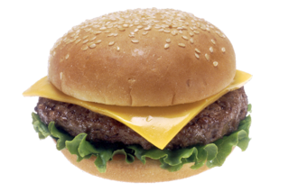

return to homepage
Classic Burger

Image taken from Wikimedia (opens in new tab)
Description
This is a recipe by Amanda Finks (open in new page).
Find out for yourself if this is indeed "The Best Classic Burger Recipe".
These instructions will make 4 servings.
Ingredients:
- 1 1/2 pounds 80% lean 20% fat ground beef or ground chuck
- 1 tablespoon Worcestershire sauce
- 1 1/2 teaspoons seasoning salt
- 1 teaspoon garlic powder
- 1/2 teaspoon ground black pepper
- Optional: 4 slices of cheese
- 4 hamburger buns
- Optional: hamburger toppings - lettuce tomato, onion, pickles, ketchup, mustard, mayo, etc.
instructions:
- Preheat the grill to 375 degrees F (medium-high).
- In a large bowl, add the beef. Sprinkle evenly with the Worcestershire sauce, seasoning salt, garlic powder, and pepper. Use your hands to mix the ingredients until they are just combined.
- Divide the meat mixture into fourths. Take 1/4 of the meat mixture and use your hands to press it into the shape of a hamburger patty that is about 3/4 inch thick. Make an indention in the middle of the patty to prevent bulging in the center of the hamburger as it cooks. Repeat with the remaining meat mixture, making 4 hamburgers.
- Place the burgers on the grill. Cook 4-5 minutes on the first side. Flip the burgers over and cook an additional 4-5 minutes, until the burgers have reached the desired doneness.*
- If adding cheese, lay a slice of cheese on each burger patty about 1 minute before taking the burgers off the grill, so the cheese has a chance to melt.
- Serve the burgers on hamburger buns with optional hamburger toppings.
return to homepage